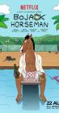

BoJack Horseman
Stephen Klancher
...has seen 61
...has seen 1 hours
...has not seen 0.1 hours

Timeline
Most Recent:
Ancient History
First Unseen:
A Horse Walks into a Rehab (# 62)
...has seen 61
...has seen 1 hours
...has not seen 0.1 hours
Timeline
Most Recent:
Ancient History
First Unseen:
A Horse Walks into a Rehab (# 62)


BoJack Horseman Christmas Special: Sabrina's Christmas Wish (2014) Airs on 2014-12-19
S2 - E0 of BoJack Horseman
S2 - E0 of BoJack Horseman